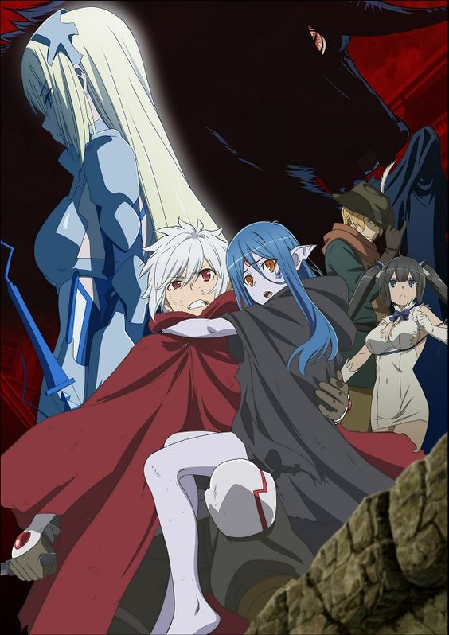

The story takes place in the fictional city of Orario whose main feature place is the Dungeon which contains an assortment of monsters from goblins to dragons. Adventurers visit the dungeon to defeat monsters and take their crystal shards, which are used to craft magic items, among other treasures; however, they can also be exchanged for the world's currency. The people of Orario join groups called Familia who serve a range of functions from dungeon crawling to crafting items. Each Familia is named after and serves a resident deity. In a fashion similar to role playing games, the adventurers are grouped into levels, increasing their levels and abilities according to their achievements.
